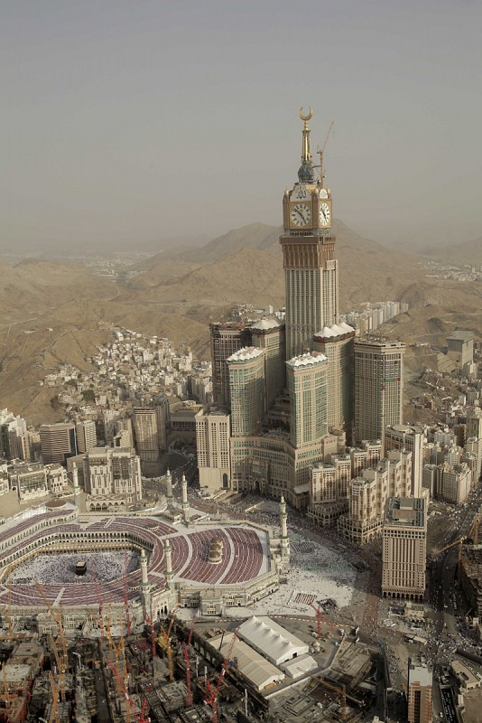
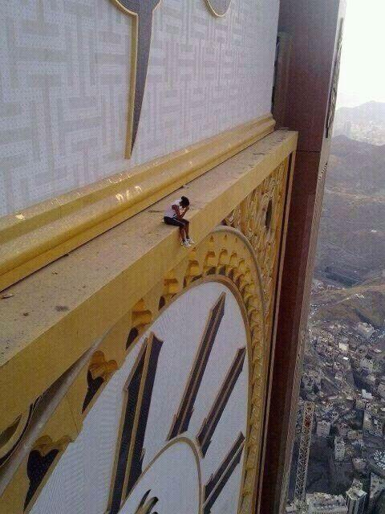
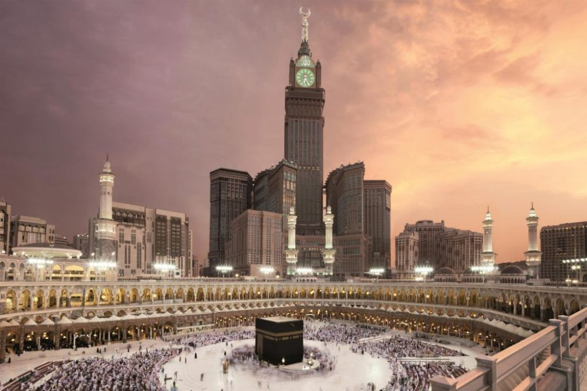
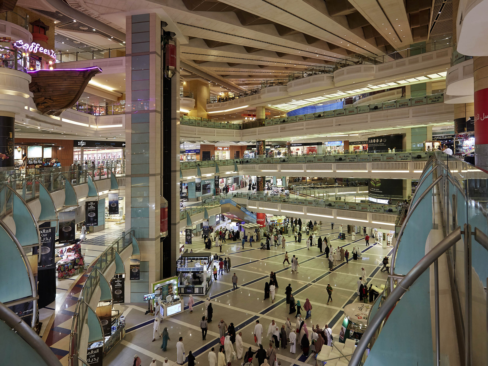

|  |
Abradż al-Bajt to monumentalny kompleks hotelowy w Mekce, zlokalizowany w pobliżu Al-Masdżid al-Haram,
największego meczetu na świecie i najświętszego miejsca islamu. Kompleks wyróżnia się szeregiem światowych rekordów,
takich jak najwyższy zegar wieżowy oraz największa tarcza zegara na świecie. Zbudowany w stylu postmodernistycznym, Abradż al-Bajt początkowo był drugim najwyższym budynkiem na świecie, ustępując jedynie Burdż Chalifa w Dubaju. Od 2015 roku zajmuje trzecie miejsce pod względem wysokości. Budynek służy nie tylko jako luksusowy hotel, ale także jako miejsce, które oferuje przestrzenie handlowe, konferencyjne i rozrywkowe. Budynek uzyskał światowy rekord za najwyższy hotel na świecie, najwyższy zegar wieżowy na świecie, największą na świecie tarcza zegara i największy na świecie budynek pod względem powierzchni. |
 |
|  |  |